롤토체스 장로 드래곤 드레이븐 덱 공략, 레벨업 스테이지·아이템·수호령·증강을 가이드 기준으로 모았어요
롤토체스 세트18에서 장로 드래곤 드레이븐 덱을 잡았는데 몇 레벨에 올려야 하는지, 아이템은 누구에게 줘야 하는지 헷갈리셨나요? 롤체지지 덱 빌더 가이드 한 편(제작자 작성, 라이엇 공식 아님)을 바탕으로 레벨업, 5~8레벨 초반 라인, 9레벨 완성형, 아이템, 수호령과 증강을 순서대로 풀었답니다ㅎㅎ
장로 드래곤 드레이븐은 가이드 제작자가 붙인 덱 이름이라 공식 명칭은 아니에요. 롤체지지 라이브 목록에선 같은 8기가 협곡야수 드레이븐으로 올라 있는데요, 통계 비교는 「롤토체스 추천메타 협곡야수 드레이븐 덱, 점유 상위 12덱 중 평균등수 3.97로 가장 낮아요」와 「롤토체스 드레이븐 덱 vs 장로 드래곤 덱, 5코 주인공 덱 5종의 평균등수는 4.06~4.76이었어요」 글에서 먼저 다뤘답니다.
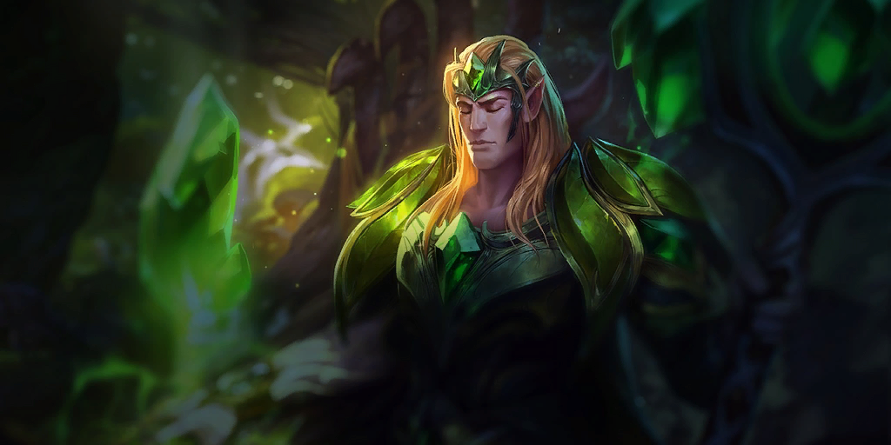
9레벨 완성형 8기에 들어가는 5코스트 타릭이에요.
이미지 출처: Riot Games · Teamfight Tactics (CommunityDragon)
장로 드래곤 드레이븐 덱은 9레벨에 5코 6기와 4코 2기가 모여요
이 덱의 9레벨 완성형은 5코스트 6기와 4코스트 2기, 전원 2성 8기예요.
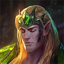
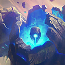
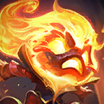
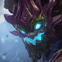
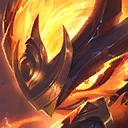
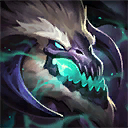
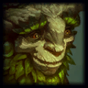

타릭, 파수꾼, 아무무, 마오카이, 케넨, 장로 드래곤, 아이번, 드레이븐 순이에요.
챔피언 아이콘 출처: Riot Games · Teamfight Tactics (CommunityDragon)
| 코스트 | 유닛 | 코스트 합 |
|---|---|---|
| 5코스트 6기 | 타릭·마오카이·케넨·장로 드래곤·아이번·드레이븐 | 30 |
| 4코스트 2기 | 파수꾼·아무무 | 8 |
코스트 합 38에 2성은 카드 3장씩이라 38×3=114, 롤체지지 가이드 목록의 비용 114와 같거든요. 난이도는 «어려움»이라고 가이드에 적혀 있고, 파수꾼은 롤체지지에 감시자로 올라 있어요.
라이브에서 같은 8기인 협곡야수 드레이븐 덱은 점유율 7.62%(2위), 1위 비율 24.1%, 순방 54.1%, 평균등수 4.12예요. 덱 표본은 34,331판(전체 450,333판)이고, 조회 2026-10-16 15:07 KST · 패치 18.4b · 마스터+ 랭크 최근 2일 기준이에요.
레벨업은 2-1~2-3의 4레벨에서 4-5~5-1의 9레벨까지 순서가 정해져 있어요
레벨업은 4-5~5-1에 9레벨을 찍는 빠른 일정을 가이드가 권해요. 스테이지별로 올릴 레벨은 아래와 같아요.
| 스테이지 | 올리는 레벨 | 가이드 빌더 화면 |
|---|---|---|
| 2-1~2-3 | 4레벨 | 없음 |
| 2-5 | 5레벨 | 보드 5기(협곡야수 5) |
| 3-2 | 6레벨 | 보드 6기(협곡야수 5) |
| 3-5~3-7 | 7레벨 | 보드 7기(협곡야수 7) |
| 4-2 | 8레벨 | 보드 8기(협곡야수 7) |
| 4-5~5-1 | 9레벨 | 5코 중심 완성형 8기 |
| 여유 골드가 있을 때 | 10레벨 | 완성형 8기 + 모르가나 |
골드나 경험치를 주는 증강으로 빠르게 9레벨에 닿은 뒤 2성을 완성하라는 게 가이드의 조언인데요, 이 스테이지에 이 레벨인 이유까지는 설명하지 않아요.
5~8레벨은 협곡야수 라인으로 보드를 채워 가요
5~8레벨 빌더 화면은 돌거북·바위 게·어스름늑대·조약돌·불타는 묘목을 뼈대로 레벨마다 한두 기씩 붙이는 구성이에요.
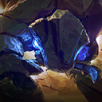
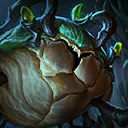
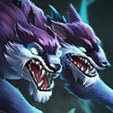

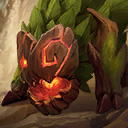
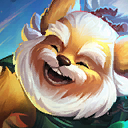
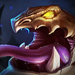
돌거북, 바위 게, 어스름늑대, 조약돌, 불타는 묘목, 코부코, 심술두꺼비, 파수꾼 순이에요.
챔피언 아이콘 출처: Riot Games · Teamfight Tactics (CommunityDragon)
| 레벨 | 보드 구성 | 협곡야수 활성 수 |
|---|---|---|
| 5레벨 | 돌거북 1성, 나머지 2성 | 5 |
| 6레벨 | 돌거북이 2성이 되고 코부코가 합류해 6기 | 5 |
| 7레벨 | 코부코가 빠지고 파수꾼(1성)·심술두꺼비가 들어와 7기 | 7 |
| 8레벨 | 7레벨 구성에 코부코가 다시 합류해 8기 | 7 |
| 9레벨 | 5코 중심 완성형 8기 | 4 |
코부코는 협곡야수가 아니라 날렵이·싸움꾼이라 6·8레벨엔 보드 수보다 협곡야수가 하나 적어요. 이 단계 아이템은 빌더 화면 기준 돌거북에 가고일 돌갑옷·워모그의 갑옷·정령의 형상, 불타는 묘목에 구인수의 격노검·최후의 속삭임·무한의 대검이에요. 9레벨 화면에선 방어 아이템 3종이 마오카이로, 무한의 대검·최후의 속삭임이 장로 드래곤으로, 구인수의 격노검이 드레이븐으로 옮겨 가는 모양새더라고요.
9레벨에서는 5코 8기로 갈아타고 배치는 앞줄 4기, 뒷줄 2기로 읽혀요
9레벨 빌더 화면은 협곡야수 라인을 접고 5코 중심 8기로 갈아탄 모습이에요. 가이드가 전환이라 부르진 않지만, 협곡야수가 7에서 4로 줄어 7에서 열리던 성장 효과는 완성형에선 꺼지고, 배치는 아래 순서로 추정돼요.
- 앞줄 4기: 타릭·파수꾼·아무무·마오카이
- 둘째 줄 2기: 케넨·장로 드래곤
- 맨 뒷줄 2기: 아이번·드레이븐
9레벨 추정 배치예요.
드레이븐을 뒤쪽에 두면 적 딜러를 먼저 노린다는 게 가이드의 설명이에요.
10레벨 빌더는 8기에 4코스트 모르가나를 더한 모습이에요. 가이드는 AD 아이템이 장로 드래곤 3종과 드레이븐 것까지 갖춰지지 않았다면 AP 럭스와 모르가나를 활용하라고 해요(럭스는 5코스트예요).
아이템은 딜러 둘에 공격 아이템, 마오카이와 타릭에 방어 아이템이에요
아이템은 드레이븐과 장로 드래곤에게 공격 아이템을, 마오카이와 타릭에게 방어 아이템을 몰아주는 구성이에요. 대체 아이템은 가이드 목록 그대로예요.
| 유닛 | 주요 아이템 | 대체 아이템 |
|---|---|---|
| 드레이븐 | 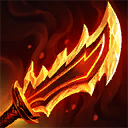 구인수의 격노검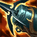 크라켄의 분노 | 명멸검 / 생선대가리 / 고속 연사포 / 황금 징수의 총(유물) 처형자 상징 / 무한의 대검 죽음의 검 / 거인 학살자 |
| 장로 드래곤 |  무한의 대검 무한의 대검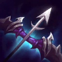 최후의 속삭임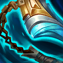 타격대의 철퇴 | 거대한 히드라 / 은빛 여명(유물) 스테락의 도전 / 정의의 손길 죽음의 검 / 거인 학살자 |
| 마오카이·타릭 | 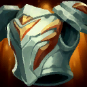 가고일 돌갑옷워모그의 갑옷 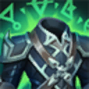 정령의 형상 | 덤불 조끼 / 용의 발톱 태양불꽃 망토 / 저녁갑주 |
| 케넨 | 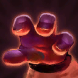 도적의 장갑 | 보석 건틀릿 / 타격대의 철퇴 밤의 끝자락 / 정의의 손길 |
아이템 아이콘 출처: Riot Games · Teamfight Tactics (CommunityDragon)
빌더 화면에선 드레이븐이 크라켄의 분노를 하나 더 들어 세 칸을 채우고, 타릭은 아이템 없이 마오카이에게만 방어 아이템 3종이 몰려 있어요. 라이브 덱 카드는 장로 드래곤의 세 번째가 스테락의 도전, 케넨이 밤의 끝자락이라 가이드와 다르고요.
수호령은 경험치 쪽으로, 증강은 빌더에 박힌 후반 성장·폭발적인 성장·초월이에요
가이드가 고른 수호령 5종 가운데 4종은 경험치를 주고, 남은 하나는 팀 능력치를 올려요.
| 수호령 | 효과 |
|---|---|
| 숙련자 | 경험치 2 |
| 동수저 | 경험치 4 |
| 성장 | 경험치 10 |
| 느긋한 학습 | 살아남은 아군 한 명당 경험치 |
| 남작의 도움 | 아군이 내셔 남작 효과를 얻어 능력치 상승 |
경험치 수호령을 한눈에 구분하는 카드예요.
증강은 가이드의 등급별 추천 중 빌더에 박힌 3개(후반 성장·폭발적인 성장·초월)를 골랐어요. 셋 다 골드 등급인데, 앞의 둘은 경험치를 주는 증강이고 초월은 전투 시작 12초 후 피해 증폭 35%를 주는 전투 증강이에요.
| 증강 | 효과(롤체지지 표기) |
|---|---|
| 후반 성장 | 매 전투 라운드 시작 시 경험치 2, 5코 아군 체력·공격 속도 12% |
| 폭발적인 성장 | 즉시 및 다음 3라운드 시작 시 경험치 7 |
| 초월 | 전투 시작 12초 후 아군 피해 증폭 35% |
프리즘 등급 목록의 레벨 업!은 경험치를 살 때 경험치가 2 더 붙고, 출세가도는 경험치 구매 비용이 1 줄어요.
자주 묻는 질문
Q. 18.4 패치에서 이 덱에 닿은 변경은 뭔가요?
공식 노트에서 이 덱과 겹치는 변경이에요. 가이드가 어느 패치 기준인지는 밝혀 두지 않았어요.
- 드레이븐: 도끼가 적에게 한 명도 맞지 않으면 마나 50% 환급(신규), 출혈 피해가 공격력 140/210에서 150/225로 상향
- 아이번: 자연의 아버지 칸 피해 증폭·추가 체력이 8/12%에서 6/10%로 하향, 같은 칸 방어력 및 마법 저항력은 8/12에서 10/14로 상향
- 케넨: 보호막 흡수량이 주문력 250/350에서 230/300으로 하향
- 정령의 형상: 내구력 8%에서 10%로 상향
Q. 4~8레벨도 꼭 협곡야수 라인이어야 하나요?
빌더 화면에서 우두머리 협곡야수로 지정된 유닛은 5레벨 불타는 묘목, 6~8레벨 돌거북, 9·10레벨 장로 드래곤이에요.
Q. 수호령은 언제 나오나요?
공식 개요에 따르면 상점을 새로고침할 때 두 번마다 한 번씩 등장해요. 18.4 노트에는 체력이 20 미만이면 일부 수호령이 나오지 않는다고 적혀 있어요.
어려움 덱이라 레벨업 표부터 익혀 두고 올리시길 추천드립니다. 롤체지지는 라이브 트래커라 덱 통계와 가이드가 몇 시간 단위로 바뀌잖아요. 그러니 올리기 전에 롤체지지 덱 목록과 가이드에서 최신 값을 한 번 더 보고 가세요. 즐겜하세요~
✔ 롤토체스 같이 보기 좋은 내용
· 롤토체스 기원자 아리 조합 아이템 정리, 특성 빌드까지 한 번에
· 롤토체스시즌18 싸움꾼 마스터 이 렝가덱 사용법 공략
· 롤토체스 사냥꾼 시비르 덱 추천 — 점유율 2위 강세덱, 특성 9개 한 번에 켜는 조합
참고한 곳
· 라이엇 게임즈 — 전략적 팀 전투 패치 노트 18.4
· 라이엇 게임즈 — 전략적 팀 전투 신비의 숲(세트18) 공식 개요
· 롤체지지 덱 빌더 가이드(제작자 작성, 라이엇 공식 아님)
· 롤체지지 덱 목록(덱 통계)
· 이미지 출처: Riot Games · Teamfight Tactics (CommunityDragon)